Cảm ơn bạn rất nhiều vì đã tin tưởng và sử dụng sản phẩm của chúng tôi.!
Trang quản trị được chia làm 3 phần chính như hình bên dưới.
Tất cả các thao tác thêm mới, xóa, sửa ở trang Admin đều theo một mẫu chung đồng nhất để tạo sự thân thiện và dễ sử dụng nhất có thể cho người dùng!
Tại phần nội dung click nút thêm
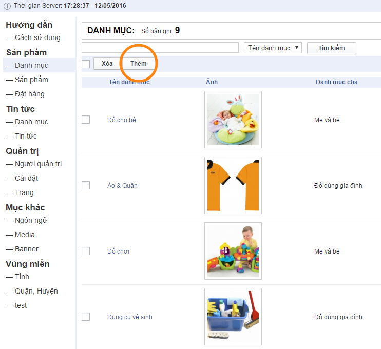Hệ thống sẽ hiển thị ra form để nhập thông tin như hình dưới, sau khi điều các thông tin, click nút hoàn thành.
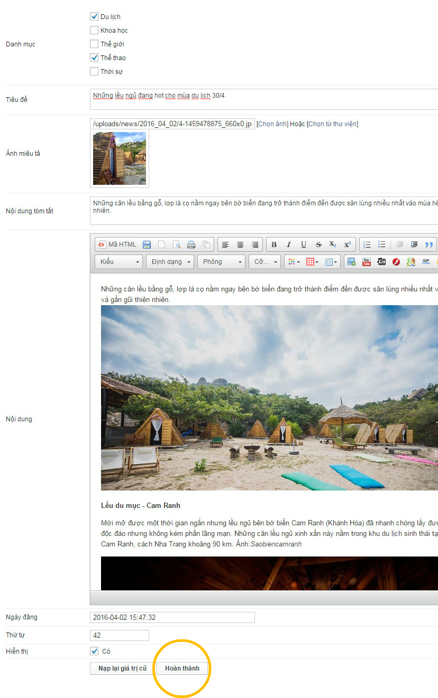
Tại phần nội dung, tích vào bản ghi mà bạn muốn xóa, sau đó click nút xóa. Hệ thống sẽ hỏi lại bạn có muỗn xóa không, click ok nếu bạn thực sự muốn xóa.
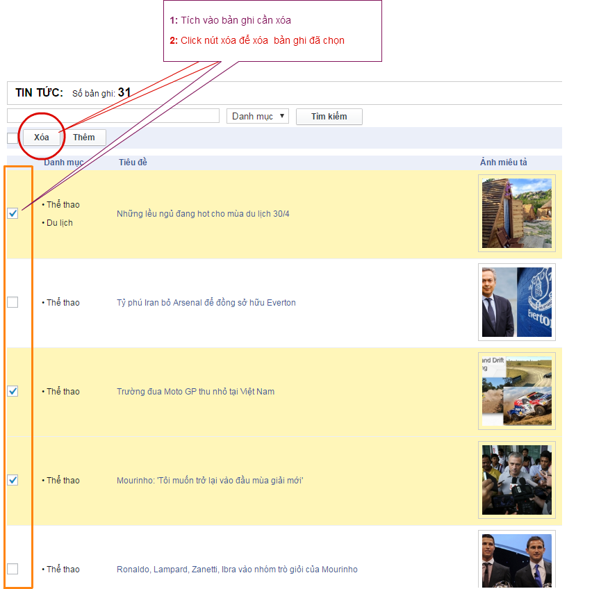
Tại phần nội dung, click vào link bản ghi mà bạn muốn sửa.
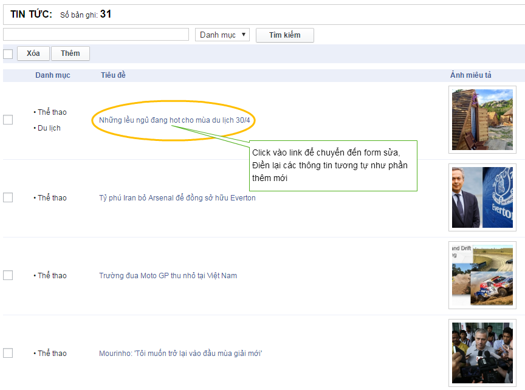Hệ thống sẽ chuyển đến form để bạn cập nhật thông tin, sau khi cập nhật lại, click nút Hoàn thành. Click Nạp lại giá trị cũ nếu bạn không muốn thay đổi gì.
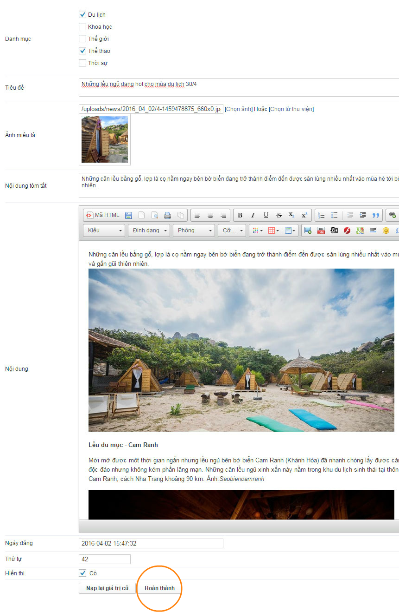
Tại cột Hiển thị ở ngoài cùng bên phải, click vào icon để hiển thị bản ghi ở ngoài trang chủ, nếu muốn ẩn đi click vào icon
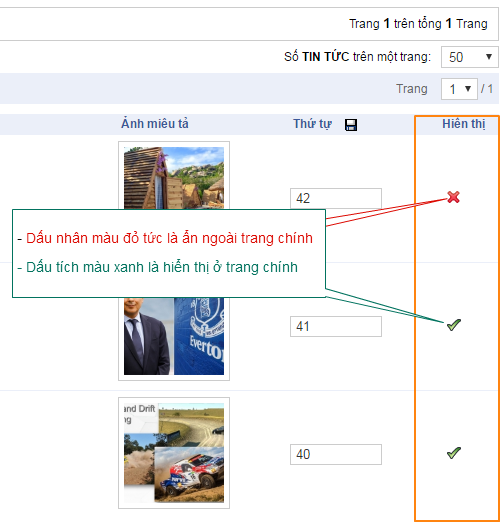
Hệ thống hiển thị mặc định 50 bản ghi 1 trang, ngoại trừ phần media con số này là 48. Bạn có thể thay đổi số lượng này cho phù hợp với màn hình của bạn.
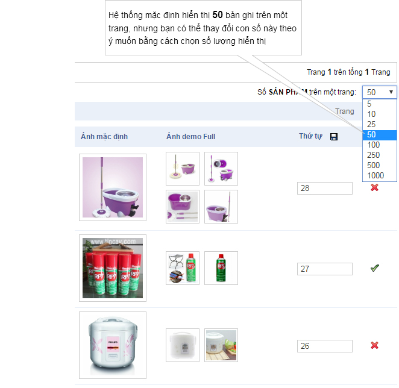
Đây là nơi quản lý tất cả các ảnh, tập tin mà bạn tải lên. Tại đây bạn có thể thêm mới, xóa, hoặc cập nhật các thuộc tính của tệp tin theo ý muốn.
Thư viện tệp tin - Media có 2 dạng hiển thị dạng List hoặc Grid
Hiển thị dạng List:
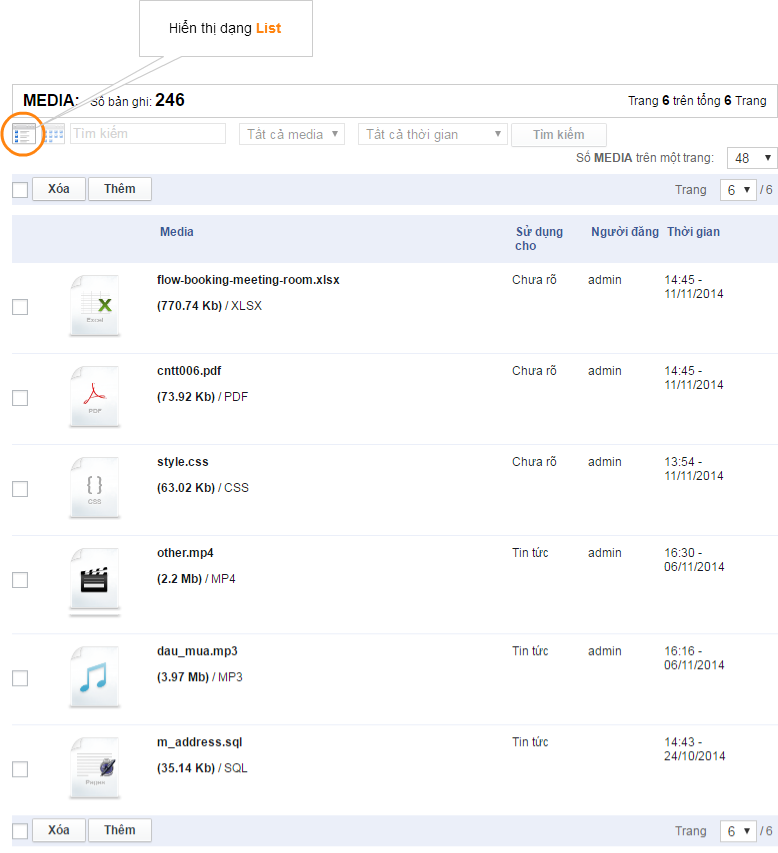
Hiển thị dạng Grid:
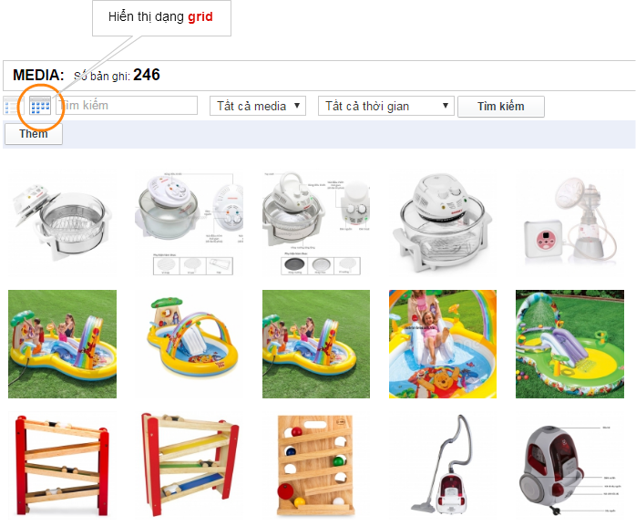
Thêm mới một tệp tin:
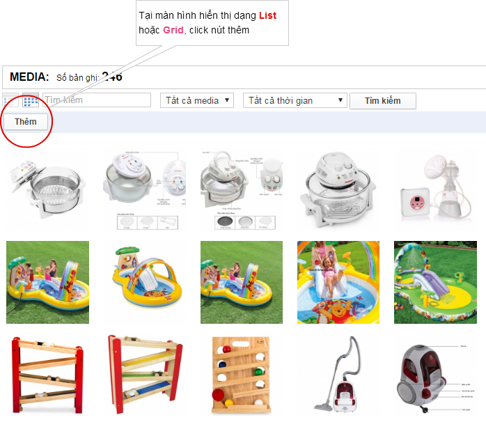
Xóa một tệp tin:
(Lưu ý: khi xóa media, tệp tin sẽ bị xóa bỏ khỏi server và những nơi đính kèm tệp tin này sẽ không được hiển thị )
Xóa tại màn hình List.
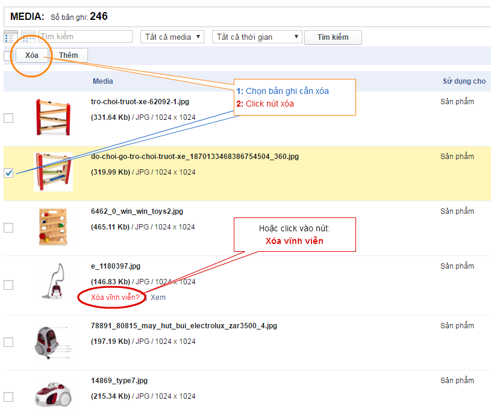Xóa tại màn hình Popup.
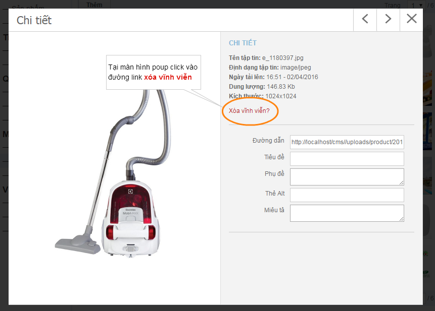
Nếu bạn đã đọc đến đây, bạn là một người kiên nhẫn.!
Mọi thắc mắc về tài liệu này xin liên hệ với tác giả qua:
Skype: hanhcoltech
Email: hanhcoltech@gmail.com